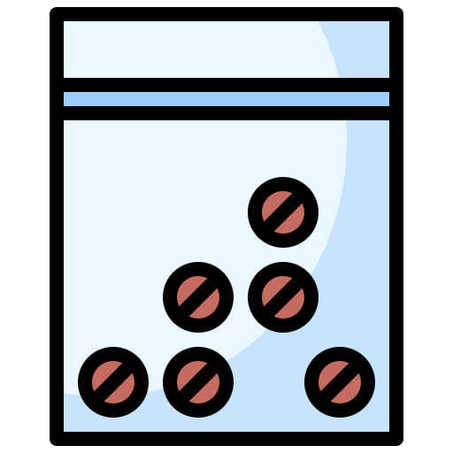
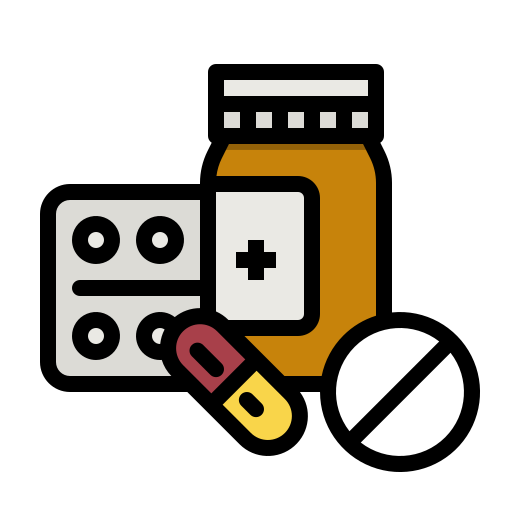
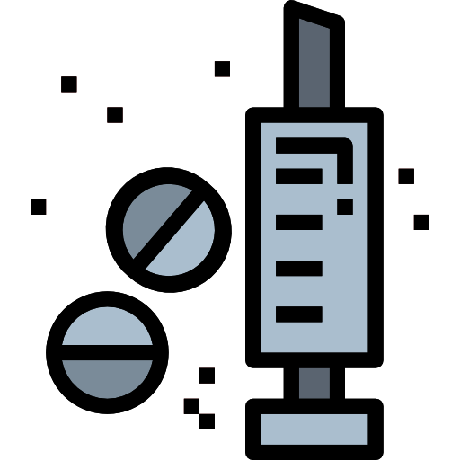
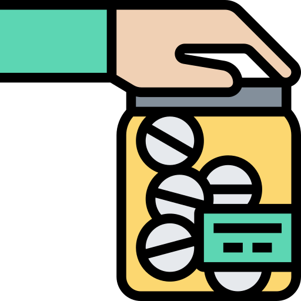
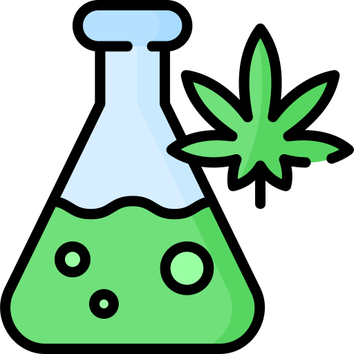
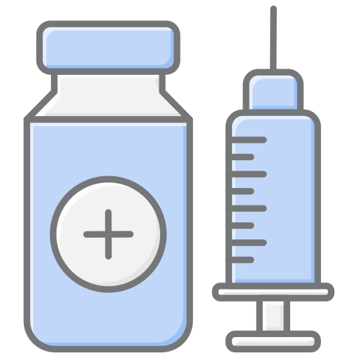
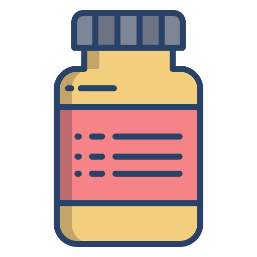

Heroína
Considerada la más adictiva debido a su capacidad para aumentar los niveles de dopamina en el cerebro hasta un 200%

Considerada la más adictiva debido a su capacidad para aumentar los niveles de dopamina en el cerebro hasta un 200%
Interfiere con la transmisión de dopamina, lo que resulta en una activación anormal de las rutas de recompensa en el cerebro

El ingrediente adictivo del tabaco, que se absorbe rápidamente y afecta el cerebro casi de inmediato

Utilizados como sedantes y anestésicos, pueden causar dependencia física y psicológica

Afecta múltiples sistemas en el cerebro y puede causar dependencia severa

Opioide sintético 100 veces más fuerte que la morfina. Alta tasa de sobredosis y mortalidad

Estimulante potente que causa euforia, pérdida de peso extrema y daño cerebral a largo plazo
Medicamentos ansiolíticos que pueden causar dependencia y sobredosis cuando se combinan con otros depresores
Opioide utilizado para tratar la dependencia de heroína, pero con alto riesgo de sobredosis

Opioide utilizado para el dolor severo, con alto riesgo de dependencia y sobredosis
Opioide recetado para el dolor, con alto potencial de abuso y dependencia
Droga recreativa que causa euforia, pero puede llevar a la depresión y problemas de memoria a largo plazo
Estimulante que puede causar psicosis, ansiedad y paranoia
Anestésico con efectos alucinógenos, utilizado recreativamente y con potencial de abuso
Depresor del sistema nervioso central utilizado recreativamente, con alto riesgo de sobredosis y dependencia
Las drogas afectan el cerebro y el cuerpo, causando dependencia, problemas de salud mental, enfermedades cardíacas, daño hepático, cáncer, y problemas respiratorios. También aumentan el riesgo de accidentes, violencia y problemas sociales, afectando negativamente la calidad de vida y las relaciones personales.